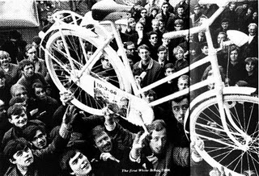

Dutch Provos Polise Karşı
 Haberlere bakarken bir baslik dikkatimi cekti: “Polis besiktas taraftarina acimadi” Carsi sempatizanligimdan hayirdir dedim, carsi yine politik icerikli bir eylem yapti da polis onlara mi daldi diye. ama isin asli oyle degil, haberden anladigim kadariyla besiktas taraftari mesaleli yuyus adini verdikleri, takimlarina mac oncesi motivasyon saglama amacli olarak inonu stadyumuna kadar onlarin otobusune eslik etmeye calisiyor ve yolu kapattiklari gerekcesiyle polis hismina ugruyor. Isin trajik yani 4 Nisanda Nato mitingine adam toplamak hic kolay olmazken, bir futbol takimina destek icin binlerce taraftar cadde bile kapatabiliyor. Birileri insanlarin enerjisini zararsiz amaclara cok iyi yonlendirmis besbelli. Ama bu kitleyi bile belli ki stadyum disinda gosteri yaparken gormeye tahammulleri yok. Fotograflar 1 Mayis goruntulerini aratmiyor, tek fark Kirmizili orak cekicli flamalar yerine, siyah beyaz kartalli flamalar. Sokalarda birlikte olmanin, birlikte protesto, omuz omuza destek olmanin gucunu insanlar hissetmesin istiyorlar. Kullanilan yontem, 1 Mayislarda veya mitinglerde insanlari sindirmek icin kullanilan yontemle ayni; Araya bir iki provakator yerlestir, polisi tahrik et, sonra polis var gucuyle zevkle saldirsin, kurunun yaninda yasta yansin, insani urperten goruntuler al, onlari gazate ve televizyondan boy boy yayinla ki bir daha kimse korkusundan sokaga cikamasin.
Haberlere bakarken bir baslik dikkatimi cekti: “Polis besiktas taraftarina acimadi” Carsi sempatizanligimdan hayirdir dedim, carsi yine politik icerikli bir eylem yapti da polis onlara mi daldi diye. ama isin asli oyle degil, haberden anladigim kadariyla besiktas taraftari mesaleli yuyus adini verdikleri, takimlarina mac oncesi motivasyon saglama amacli olarak inonu stadyumuna kadar onlarin otobusune eslik etmeye calisiyor ve yolu kapattiklari gerekcesiyle polis hismina ugruyor. Isin trajik yani 4 Nisanda Nato mitingine adam toplamak hic kolay olmazken, bir futbol takimina destek icin binlerce taraftar cadde bile kapatabiliyor. Birileri insanlarin enerjisini zararsiz amaclara cok iyi yonlendirmis besbelli. Ama bu kitleyi bile belli ki stadyum disinda gosteri yaparken gormeye tahammulleri yok. Fotograflar 1 Mayis goruntulerini aratmiyor, tek fark Kirmizili orak cekicli flamalar yerine, siyah beyaz kartalli flamalar. Sokalarda birlikte olmanin, birlikte protesto, omuz omuza destek olmanin gucunu insanlar hissetmesin istiyorlar. Kullanilan yontem, 1 Mayislarda veya mitinglerde insanlari sindirmek icin kullanilan yontemle ayni; Araya bir iki provakator yerlestir, polisi tahrik et, sonra polis var gucuyle zevkle saldirsin, kurunun yaninda yasta yansin, insani urperten goruntuler al, onlari gazate ve televizyondan boy boy yayinla ki bir daha kimse korkusundan sokaga cikamasin.
Kendi kendime polis bu ulkede olmasi gerektiginden fazla bir guce sahip diye hayiflanirken gecenlerde okudugum bir makale aklima geldi. Makale Dutch Provos diye bilinen, 1960larda Hollandada yaratici eylemler ve gosteriler yaparak marihuannanin legallesmesi dahil bir cok kazanima on ayak olmus bir grup. Hollandanin bizim bildigimiz ozgurlukcu Hollanda olmasinda bu abilerin baya payi var. Siddetsizligi ve absurd komediyi gosterilerinde ve eylemlerinde birlestirerek sosyal sorunlara isaret ediyorlardi. Besiktas taraftari ile alakasi, Dutch provos’u olusturan grup aslinda Nozem denilen sokakta amacsiz bir sekilde mopedleri ile dolanip, sistemden rahatsiz ama ne yapacagini bilmeyen genclerden olusuyor. Nozemlerin en buyuk vakit oldurme aktivitesi sorun cikarmak ve polisi provoke etmek. Amacsiz huzursuz gencligin enerjisi, aktivizmle birlesince Dutch Provos doguyor. Besiktas taraftarinin yedigi polis sopasi ile alakasi, Dutch provosta az polis siddetine maruz kalmadi. Lakin Dutch Provolarin en onemli farki Polisi hic siddet kullanmadan zekalarini kullanarak uysallastirmayi basarmalari.
Ilk basta her sey Marihuette oyunu ile basliyor, marihuanna hakkinda ortaliga ve ozellikle polise yanlis bilgi verme oyunu. 1960 larda marihuanna icimi yasak, ama polisin marihuanna hakkinda dogru duzgun bir bilgisi yok. Bilmeyen insana ne dersen ona inanir degil mi? Iste Dutch Provos’da tam bunu kullanarak marihuannayi yasaklayanlarin aslinda konuyla ilgili cehaletini ortaya sermeye calisiyor. Oyunun tek kurali, eglenmek, polisle dalga gecmek ve arada ot icmek. Marihuannaya uzaktan yakindan benzer herseye marihu demeye basliyorlar: cay, kedi mamasi, otlar, tohumlar vs. Kendi kendilerini polise ispiyonluyorlar. Oyunun en buyuk odulu, polisi olmayan bir seyi arar hale getirebilmek.
Frakli farkli yerlerde bir suru Marihuetteoyunu tertipleniyor. Bir gun Provos belcikaya otobusle giderken polise grupa marihuanna oldugu bilgisi sizdiriliyor. Polis sinirda barikat kurup otobusu durdurup arama yapiyor, basinda ordayken. Kopek mamasindan baska bir sey bulamiyor. ertesi gun gazeteler Kopek Mamasi Marihuanna diye polisle dalga geciyor. Bu olaydan sonra polis provoslari marihuanna konusunda rahat birakiyor, tekrar boyle komik bir duruma dusmemek icin.
Marihuetteoyunu ilerdeki Provos aktiveteleri icin bir model oluyor. Bu oyunlar ilginc bir sekilde otoritelerin o her zaman hakli duruslarini tuz buz ediyor. Polis herzaman asiri tepki gosteriyor ve aktivite icerisinde kendilerini komik duruma dusuruyordu. Ama oyunlarin arkasinda ciddi bir amac da vardi: Daha iyi bir toplum yaratmak.
Insanlari harekete gecirmek icin beyaz plan adi verilen aktiveteleri hayata geciriyorlar. En unlu beyaz planlari her halde Amsterdamda arabalarin yerini bisikletlere cevirme beyaz plani olsa gerek. Plan insanlarin bisikletlerini beyaza boyayip sokaga birakmalarini, boylece herkesin arabalarini kullanmak yerine rahatca bisikletlerle gitmek istedikleri yerlere gitmelerini saglamak. Ilk 50 bisikleti kendileri beyaza boyayip torenle sokaga birakiyorlar, polis hemen hirsizliga davetiye cikardigi gerekcesiyle bisikletleri topluyor.Provo polis bisikletleri calarak karsilik veriyor.
Beyaz kurban plani ise yine arabalara karsi bir plan. Insanlara her araba kazasi olan yere kurbanin dis hatlarini yere beyaz boyayla cizmelerini salik veriyorlar. Boylelikle amac arabalarin yarattigi zararin toplumsal hafizadan silinmesini onlemek. (Ara not bunun benzerini Kanadada gordum gecenlerde, bir arabanin bir yayaya veya bisikletliye carptigi yerde haftalarca insanlar cicek ve notlar biraktilar, o kaldirimi trajik bir mezar yeri havasina cevirdiler, sanirim butun suruculerin daha dikkatli olmasi icin cok iyi bir yontem)
Diger beyaz planlar: Beyaz baca plani(cevreyi kirleten bacalara yuksek vergi koy ve bacalarini beyaza boya), beyaz cocuklar plani (ucretsiz kres saglanmasi icin), beyaz kadin plani (kadinlar icin ucretsiz ucretsiz saglik hizmeti) vs. Bir yerden sonra bir beyaz plan uretmek provo olmanin sarti haline geldi.
Polis giderek provolara karsi daha fazla siddet kullanmaya basladi haliyle, onlari ve olasi yeni provolari caydirmak adina. Provonun yaniti yine bir beyaz planla geldi: Beyaz tavuk plani. Hollanda polisi mavi tavuk imaji ile biliniyordu. Provolar ise bunu beyaz tavukla degistirmeye karar verdi. Polis gibi giyinmis, ama mavi yerine beyaz kiyafetler, beyaz bir bisikletle gezen, silahsiz, insanlara ilk yardim, kizarmis tavuk ve prezervatif dagitan beyaz polisler. Tabi bu polisin hosuna gitmedi ve beyaz polisleri gozaltina aldi.
Provo-Polis atismalari provo hareketi var oldugu surece devam etti. Polis duzenli toplandiklari ve konusmalar, gosteriler yaptiklari heykel cevrelerinde onlari toplum huzurunu bozmaktan goz altina aldi. Onlar bir sonraki sefer heykelin cevresine cicek sunmak icin toplandi bu sefer, yine goz altina alindilar ayni sebeple. Polis bildiri dagitan provolari tutukladi, bir sonraki hafta provolar bildiri yerine beyaz kagit dagitmaya basladilar, yine tutaklandilar. Gosterilerde kuru uzum dagittiklari icin bile tutuklanmaya basladilar. Tutuklanmalar provolar icin normal hale gelirken, polis kendini giderek daha da marjinallestirdi ve komik ve haksiz duruma dustu, insanlarin guvenini kaybetmeye basladi.
Isi tavana cikaran olay ise bir kraliyet dugun gununde gerceklesti. Provolar kraliyet mitolojisine da karsiydilar ve daha once karsi gosteriler gerceklestirmislerdi. Dugun haberini alir almaz aylar oncesinden hazirliklara giristiler. Buyuk bir provo dugun hediyesi icin bagis toplamaya basladilar. Beyaz soylentiler plani devreye konuldu. Dugun gunu sehrin su kanalina lsd atilacagindan tut da dugun alanini boyamaya yeticek bir boya tabancasi hazirladiklarindan o gun kraliyet atlarina uyusturucu vereceklerine kadar degisik korkunc plan soylentileri sokaga salindi. Provolar bir iki gaz bombasindan baska bir sey planlamiyorlarken, polis sehirde olasi en kotu teror planina hazirlik yapiyordu. Yabanci basin ajanslari provolara ne yapacaklarini onceden soylemeleri icin cok buyuk paralar teklif ediyorlardi.
Dugunden iki-uc gun once buun provolar kayiplara karisti, goz altina alinmamak icin. Sehre 25.000 ek polis kuveti getirildi dugun gunu icin. Mucizevi bir sekilde provos dugun alanina sizmayi basarip seker ve nitrattan yapilmis bir iki gaz bombasi patlatti ve olanlar oldu. Ortagi kaplayan buyuk miktardaki duman canli yayindaki televizyonlardan butun dunyada panik yaratirken, polis panikle kalabaliga saldirdi butun yerli ve yabanci basinin onunde, yerli ve yabanci basina da. Cogu sehir disindan getirilen polisler olduklari icin kimin provo kimin normal insan oldugunu bilmiyorlardi haliyle. Rezalet ustune rezalet.
Torenden bir iki hafta sonra dugun davetlilerine uygulanan polis siddetinin fotograf sergisi sehirde sergileniyor, davalar sikayetlerin ardi ardi arkasi gelmiyordu. Toplumun polise olan rahatsizligi cok baska bir boyuta tasinmisti bu olayla.
Turkiyede giderek artan polis siddeti, Dutch Provos gibi olusumlara duyulan ihtiyaci hatirlatiyor. Polisle catisarak bir yere varilmaz, ama siddetsiz gosteriler ozellikte espiri unsuru icerdigi olcude donusturucu bir guce sahip olabilir. Dun mitinglerde gosterilerde dusuncelerini rahatsiliklarini dile getiren vatandaslara, bugun takimini destekleyen bir taraftar gurubuna, yarinda sokakta yuruyen vatandasa. Polis toplum huzurunu saglamak icin ihtiyacimiz olan bir guc. Ama bir reklam slogani vardi hani: Kontrolsuz guc, guc degildir.

NazIm
ps: Dutch Provos ile ilgili detayli cok ilginc makalaye buradan ulasabilirsiniz, bu makaleden beni blogundan haberdar eden Aysem’e de burdan tessekkurler.


{kind=link}
{kind=link}
{kind=link}
{kind=link}
Çatışmanın nedenleri, polis olmayan kitlenin bir araya gelme nedeni vs. hakkında henüz bilgi sahibi değilken, uzaktan gördüğünde “polis suçu olmayanı neden dövsün arkadaşım” diyebilen insanların yaşadığı bir ülkede yaşamanın sorunları…
Kraliçeliler falan ama, Kanada’da da, Hollanda’da da engizisyondan “yasal işkence”ye tarih boyunca devlet ve toplum arasındaki ilişkide yaşanan dönüşümü tamamlamak ya da ikame edecek başka bir sonuç yaratmak lazım.
“Polis suçu olanı karakola götürür, işlem yapar, dövmez” cümlesi herkes için öntanımlı hale gelene kadar polisi değil, yarın dayak yeme potansiyeli olan ama bunu anlamayan hıyarları alaya almak lazım.
Bu yazıyı hatırlatan güzel bir eylem duydum bugün. ahali adlı bir anarşist oluşum, her tür siyasi faaliyeti kesin şekilde yasaklamış üniversite yönetiminin tavrını deşifre etmek ve alaya almak için boş bildiri dağıtmış.
üniversitede ellerindeki boş kağıtları “ideolojik bildiriler” diye dağıtan eylemcilere bir süre sonra güvenlik görevlileri müdahale edip “boş da olsa dağıtamazsınız” demişler… onlar da “görüyor musunuz arkadaşlar, boş bir kağıdı vermek bile ideolojik olabiliyor, yarın birinden peçete istediğinizde soruşturma açılabilir… insan gibi yaşamak istiyorsanız bir düşünün” diye bağırmış, eğlenmişler…
super bir haber bu…insallah daha fazla sayida insan ve grup bu tip aktiviteler tertiplerde toplum biraz insanlarin protesto hakkina karsi uygulanan anlamsiz siddetin daha cok farkina varir…bir yerli mali mitingi yapsa mesele, nar, icir, karpuz falan yesek topluca, acaba polis ona da dalar mi 🙂
yazıyı okuduğumda annem geldi aklıma :).Her tartışmaya "onların da evde coluğu cocuğu var siz delirtmeseniz polis kimseye birşey yapmaz. hiç bana yolda yürürken bir şey yapmadı derdi" . bu kadar düz bir mantık. Ne zaman ki ben gözaltına alınıp daha sonra tutuklandım ve benim gözaltı ile işkence sürecimde annem bana ulaşmaya çalıştı o zaman gercek polislerle tanıştı. Şimdi kimse ülkemin polislerini ne haklı gösterebilir ne de sevdirebilir hatunama. Ama ben buradan yurdumun polislerine teşekkür etmeyi bir borc bilirim. Keza senelerce anneme derdini anlatamayan bendeniz yerine annemi 1 hafta gibi kısa bir sürecde bilinclendirdiler. hatta bir keresinde "senin kızın burda suclu olmasa ne arar demek ki namussuz ahlaksızmış kızın "diyen polise . " benim kızım namuslu ve ahlaklı olmasa asıl burada olmaz dı" dedirtecek kadar . yürü be anne kim tutar seni